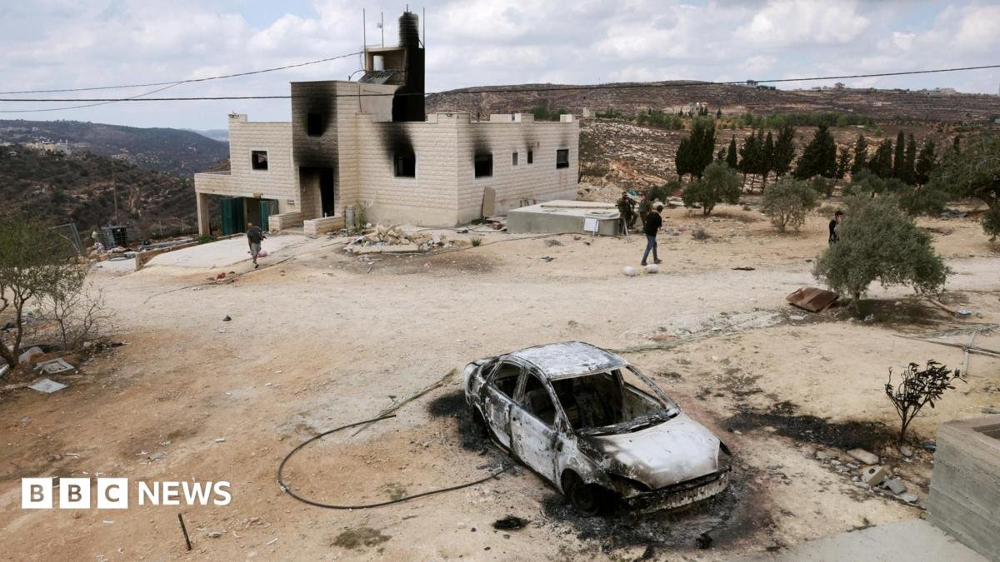
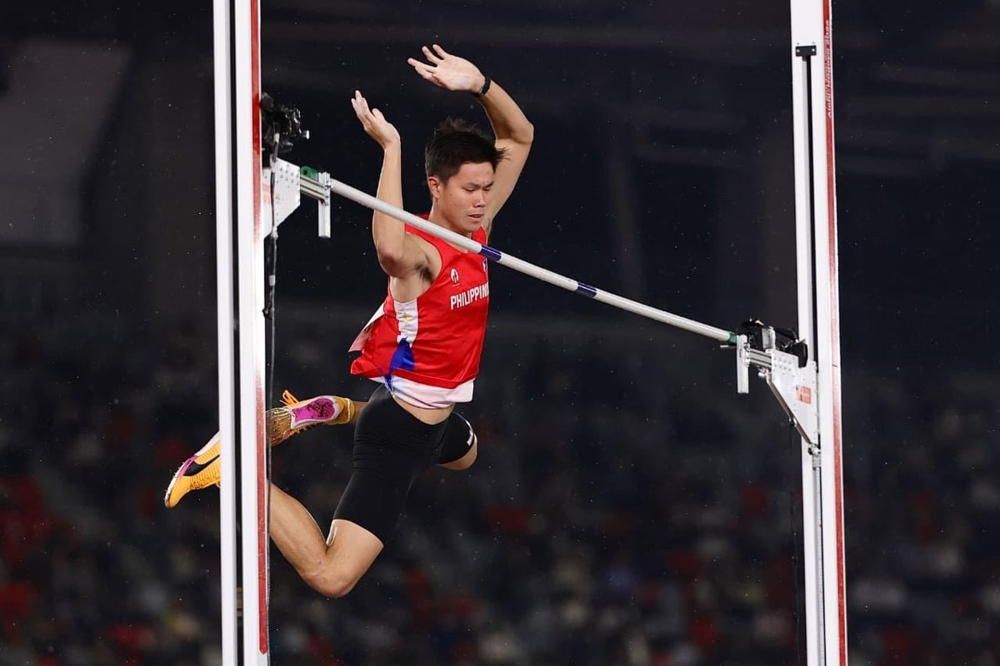

Putin expands army to 2.44M; Zelenskyy flags more NK troops
29 Sep 2026
CNBC / AP desk: A presidential decree lifts Russia’s armed forces to about 2.44 million personnel, including 1.55 million active servicemen — a 15,500 active bump and the fourth staffing increase this year. Zelenskyy said more than 8,000 North Korean troops are already on Russian soil and another 10,000 are being prepared. Winter pressure and stalled energy-truce talk sit behind the numbers.
Open CNBC
Israel kills north Gaza Hamas wing chief Izz al-Din Al-Beik
29 Sep 2026
CNA / AFP: Israel said it killed Izz al-Din Al-Beik, head of Hamas’s armed wing in north Gaza and a figure Hamas itself tied to the Oct 7, 2023 attack planning. Medics reported an apartment strike in Gaza City’s Nasr area at dawn, with further Jabalia hits later. Israel counts about 20 Hamas figures killed this month under a fraying ceasefire; Gaza health officials put post-ceasefire Palestinian deaths above 1,400.
Open CNA

100+ settlers hit Jalud; block family return ordered by court
29 Sep 2026
BBC: More than 100 Israeli settlers attacked Jalud south of Nablus, set two al-Tubasi family houses on fire, and blocked a military-escorted return that Israel’s high court had ordered by 20 Sep. IDF described rioters burning tires and throwing stones at forces; police arrested three. UN tallies put settler-driven displacement above 6,500 Palestinians since 2023.
Open BBC
Kyiv braced as ballistic missiles and jet drones stack alerts
29 Sep 2026
AP / LA Times: Russia’s accelerated mix of ballistic missiles and high-flying jet-propelled drones is stressing Kyiv’s defenses; scarce Patriots remain the best ballistic shield. More than 235 air-raid alerts since late August have disrupted daily life as Ukraine prepares for another winter strike season on power and heat. Faster interceptor drones are in test but months from mass use.
Open LA Times
Valenzuela school suspends classes after shooting threat
29 Sep 2026
GMA / PNP: A Valenzuela City school halted classes Tuesday while police probed a reported shooting threat. Officers said they found no immediate danger on site but kept the investigation open. Parent read: treat campus threat protocols as live — know pickup rules and the school’s alert channel before the next scare day.
Open GMA
Walang pasok Wed: transport strike empties some campuses
29–30 Sep 2026
Inquirer / GMA / PNA: Multiple LGUs and schools suspended Wednesday classes for the nationwide transport strike, with some shifting to online. Albay paired suspensions with free-ride offers. Parent ops: confirm your school’s modality by morning, not the group chat rumor after 7 a.m.
Open Inquirer
Asiad board: PH 3-3-12 after Obiena gold, four-medal Tuesday
29 Sep 2026
GMA / POC: Biggest single-day haul yet — EJ Obiena’s pole vault gold at 5.91 m (Asian Games record) plus Victoria Bossong’s 800m bronze, women’s sepak doubles silver (Salon/Sucalit/Sinogbuhan), and Jayuard Alciso’s shortboard bronze. Tally: 3 gold, 3 silver, 12 bronze (18 total). Carlos Yulo’s floor and vault golds still headline the gold column.
Open GMA

Eala QF vs Garland; Paalam SF vs Sabyrkhan — Wednesday
29–30 Sep 2026
GMA / Philstar: Alex Eala and Shaira Rivera took doubles 6-1, 6-3 over Hong Kong; Eala returns Wednesday in singles quarters vs Chinese Taipei’s Joanna Garland. Carlo Paalam meets Kazakhstan world champion Makhmud Sabyrkhan in the 55kg boxing semis the same day — bronze already locked, gold path still open.
Open GMA
Starship’s first orbit, then engine snag squeezes Artemis timeline
28–29 Sep 2026
Reuters / EarthSky: Flight 14 reached Earth orbit and deployed Starlink V3 birds, then cut the plan short after a Raptor issue and splashed down early in the Pacific. NASA’s Artemis path still leans on a Starship lander; the same engine family now sits on the critical path for an Earth-orbit rehearsal targeted as soon as 2027 and a crewed landing goal still printed near 2028, with Blue Origin as hedge.
Open Reuters
Apple Watch Readiness score lands; Series 12 HR stack tightens
Sep 2026
TechRadar / MacRumors: Apple’s long-missing Readiness-style recovery score is now on Watch, paired with Series 12’s higher-frequency heart-rate sensing. Desk take: Apple is closing the Whoop/Garmin recovery gap in software while the new sensor race against Forerunner-class accuracy stays the hardware story.
Open TechRadar